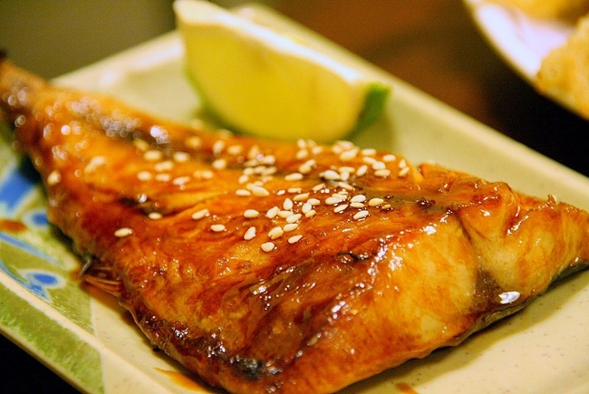
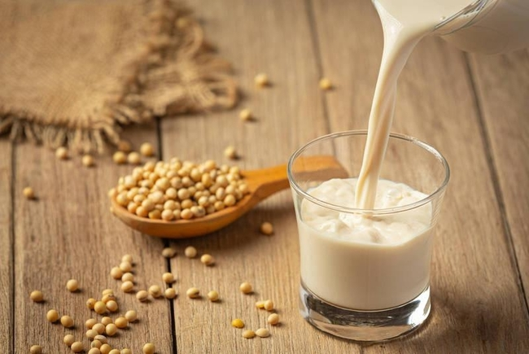
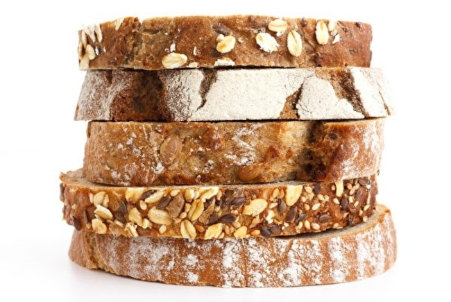
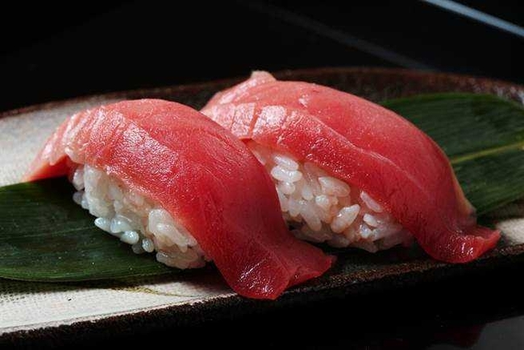
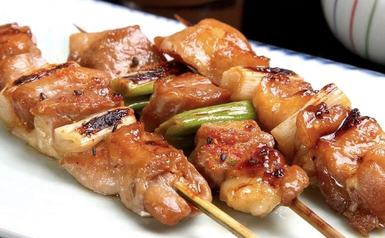
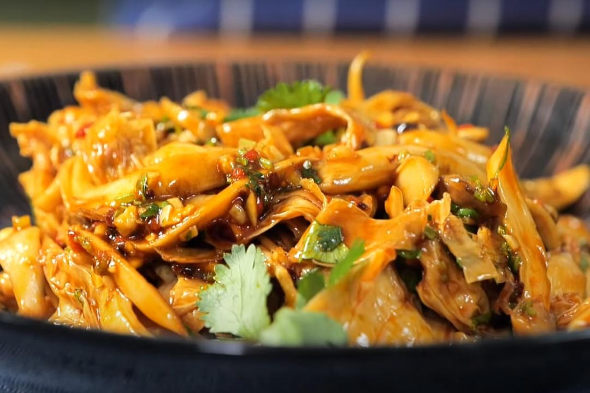

增肌飲食小知識
- 高蛋白飲食
- 增加總熱量攝入
- 多喝水
- 選擇複雜的碳水化合物
- 攝入健康脂肪
蘑菇雞胸肉

蘑菇蛋白質含量高，脂肪含量低，通常在1%以下，多數甚至不 到0.5%，堪稱“零脂肪素肉”，但本身如有腎臟問題、痛風患者及 腸胃功能較弱的族群不建議吃過多。
蘆筍炒蝦仁

每100 克的蘆筍僅含有20大卡的熱量，卻包含了50% 的蛋白質、 42% 的碳水化合物，一隻去殼後約10克的蝦子含有2～3克的蛋白 質，二者皆為優質的蛋白質來源。
照燒鯖魚
富含蛋白質、脂肪並含很好的維他命，所含omega-3除抗癌 外，蛋白質提高免疫力，維他命B2促進脂肪代謝，且相較於鮭 魚，鯖魚的營養價值更勝一籌。
無糖豆漿
豆漿在生活中相對容易取得，其富含蛋白質，增肌功效佳，也 比市面上銷售的任何乳清蛋白便宜，還含有更多元的胺基酸， 是運動後的好選擇之一。
全穀物麵包
相同的營養素比例之下，碳水化合物以全穀類替換，相較於全部 精緻的碳水化合物組成，可以提高身體的蛋白質轉換率，另外， 研究結果也支持，這樣的飲食可以增加年長者的肌肉功能。
鮪魚壽司
鮪魚壽司是一種非常理想的運動前零食，蛋白質可以以防止肌 肉分解，而碳水化合物可以作為「燃料」，給予能量來應付劇烈 運動時的需要。
烤雞胸肉串
雞胸肉富含優質蛋白，每100克雞胸肉大約含有20-24克蛋白質且含有豐富的必需氨基酸，這是觸發肌肉蛋白質合成的關鍵氨基酸，有助於肌肉增長。
涼拌杏包菇雞絲
富含蛋白質和膳食纖維，同時低熱量低脂肪，非常適合增肌和控制體脂的人食用。杏包菇和雞胸肉的搭配不僅增加了口感，還帶來了多種營養成分，特別適合在運動後食用來幫助肌肉恢復。